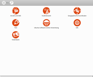

Qreator
Dieser Artikel wurde für die folgenden Ubuntu-Versionen getestet:
Ubuntu 16.04 Xenial Xerus
Ubuntu 14.04 Trusty Tahr
Zum Verständnis dieses Artikels sind folgende Seiten hilfreich:
Qreator  ist ein grafisches Hilfsmittel zum Erstellen von QR-Codes. Das Programm kann neben den üblichen QR-Daten auch Geokoordinaten, WLAN-Hotspots und Visitenkarten kodieren. Es lässt sich besonders einfach bedienen und die Oberfläche ist komplett auf Deutsch. Der Preis für diesen Komfort: spezielle Angaben wie z.B. zur Größe des QR-Codes sind nicht möglich. Wer Sonderwünsche hat, weicht auf qrencode aus.
ist ein grafisches Hilfsmittel zum Erstellen von QR-Codes. Das Programm kann neben den üblichen QR-Daten auch Geokoordinaten, WLAN-Hotspots und Visitenkarten kodieren. Es lässt sich besonders einfach bedienen und die Oberfläche ist komplett auf Deutsch. Der Preis für diesen Komfort: spezielle Angaben wie z.B. zur Größe des QR-Codes sind nicht möglich. Wer Sonderwünsche hat, weicht auf qrencode aus.
Installation¶
 Das Programm ist ab Ubuntu 14.04 in den offiziellen Paketquellen enthalten [1].
Das Programm ist ab Ubuntu 14.04 in den offiziellen Paketquellen enthalten [1].
qreator (universe)
 mit apturl
mit apturl
Paketliste zum Kopieren:
sudo apt-get install qreator
sudo aptitude install qreator
PPA¶
Alternativ steht ein "Personal Packages Archiv" (PPA) [3] zur Verfügung.
Adresszeile zum Hinzufügen des PPAs:
ppa:qreator-hackers/qreator-stable
Hinweis!
Zusätzliche Fremdquellen können das System gefährden.
Ein PPA unterstützt nicht zwangsläufig alle Ubuntu-Versionen. Weitere Informationen sind der  PPA-Beschreibung des Eigentümers/Teams qreator-hackers zu entnehmen.
PPA-Beschreibung des Eigentümers/Teams qreator-hackers zu entnehmen.
Damit Pakete aus dem PPA genutzt werden können, müssen die Paketquellen neu eingelesen werden.
Verwendung¶
Aufgerufen wird das Programm bei Ubuntu-Varianten mit einem Anwendungsmenü über "Zubehör -> Qreator" oder via qreator [4]. Die Erstellung eines QR-Codes erfolgt über die Auswahl einer der folgenden Möglichkeiten:
Anrufe (Telefonnummer) und SMS (Telefonnummer + Text)
Funknetzwerk (mit integrierter WLAN-Suche; WEP und WPA werden unterstützt)
Geographische Koordination (via OpenStreetMap)
Text
Ubuntu-Software-Center-Anwendung (via apturl)
Internetadresse (URL)
Visitenkarte
Je nach Auswahl müssen dann einfach die in der Bildschirmmaske geforderten Angaben vervollständigt werden.
|  |
| Auswahl |
| Funknetzwerk |
| Geokoordinaten |
| URL |
Um unteren Fensterrand befinden sich vier Symbole, mit denen der erzeugte QR-Code weiterverarbeitet werden kann.
| Funktionen | |
| Symbol | Zweck |
| QR-Code als Bild im PNG-Format speichern | |
| QR-Code in die Zwischenablage kopieren | |
| QR-Code drucken | |
| QR-Code bearbeiten (Vorder- und Hintergrundfarbe ändern oder invertieren) | |
Möchte man nach Erstellung eines QR-Codes wieder in die Übersicht wechseln, geschieht das über den Menüpunkt "Neu" oben links im Programmfenster.
Links¶
Qreator offers fast creation of QR Codes in Ubuntu
- Blogbeitrag, 06/2012QR-Code
 Übersichtsartikel
Übersichtsartikel
- Erstellt mit Inyoka
-
 2004 – 2017 ubuntuusers.de • Einige Rechte vorbehalten
2004 – 2017 ubuntuusers.de • Einige Rechte vorbehalten
Lizenz • Kontakt • Datenschutz • Impressum • Serverstatus -
Serverhousing gespendet von